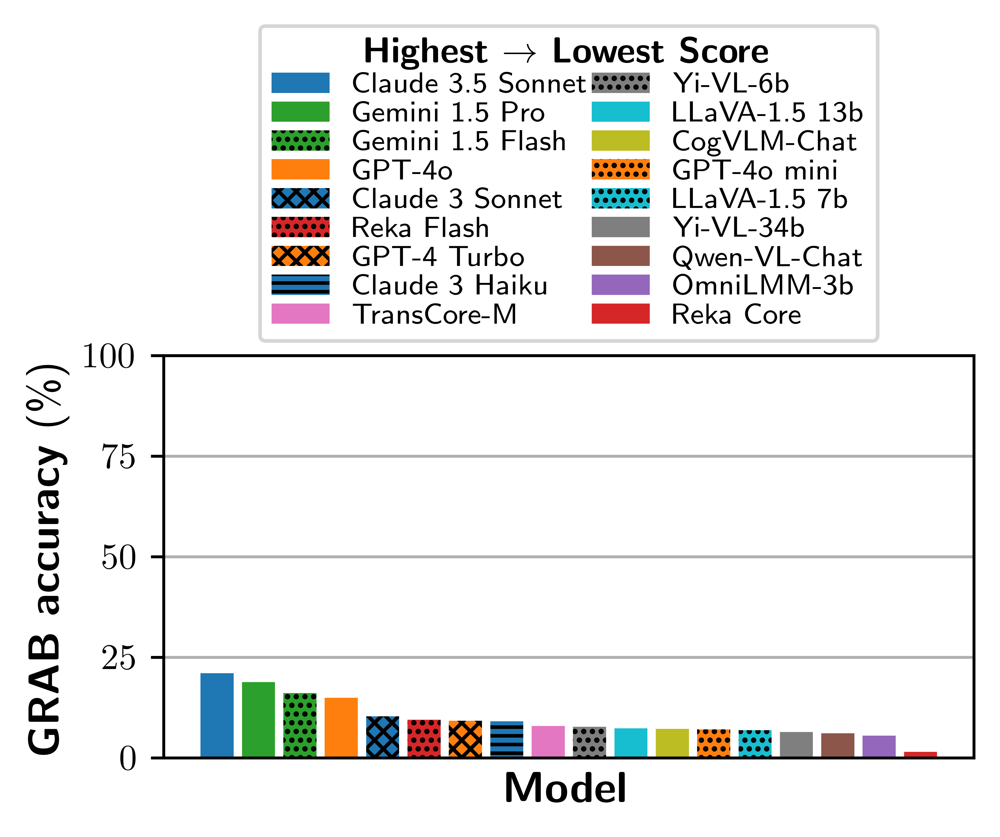

Overall performance on GRAB. Our benchmark proves challenging for frontier LMMs.
The highest performing model, Claude 3.5 Sonnet 🥇, attains an accuracy of just 21.0%.
Large multimodal models (LMMs) have exhibited proficiences across many visual tasks. Although numerous benchmarks exist to evaluate model performance, they increasing have insufficient headroom and are unfit to evaluate the next generation of frontier LMMs.
To overcome this, we present GRAB, a challenging benchmark focused on the tasks human analysts might typically perform when interpreting figures. Such tasks include estimating the mean, intercepts or correlations of functions and data series and performing transforms.
We evaluate a suite of 20 LMMs on GRAB via exact matching, finding it to be a challenging benchmark, with the current best model scoring just 21.0%.
Focused on the recent development of reasoning models, we also introduce GRAB-Lite, a light-weight task-balanced 500-question subset of GRAB, and evaluate leading frontier LMMs on it.
| Rank | Model | Properties | Functions | Series | Transforms | Real | Overall |
| 1 | Claude 3.5 Sonnet 🥇 | 41.8 | 15.5 | 11.0 | 10.0 | 19.6 | 21.0 |
| 2 | Gemini 1.5 Pro 🥈 | 34.2 | 11.4 | 13.3 | 6.5 | 20.3 | 18.8 |
| 3 | Gemini 1.5 Flash 🥉 | 28.5 | 11.5 | 8.4 | 9.0 | 17.1 | 16.1 |
| 4 | GPT-4o | 24.7 | 10.8 | 9.2 | 3.5 | 17.3 | 14.9 |
| 5 | Claude 3 Sonnet | 15.3 | 8.6 | 4.5 | 4.8 | 12.4 | 10.3 |
| 6 | Reka Flash | 13.2 | 10.1 | 6.3 | 3.9 | 10.0 | 9.5 |
| 7 | GPT-4 Turbo | 18.5 | 8.5 | 4.9 | 3.5 | 7.5 | 9.2 |
| 8 | Claude 3 Haiku | 14.2 | 6.6 | 8.8 | 3.9 | 9.2 | 9.1 |
| 9 | TransCore-M | 7.9 | 9.2 | 7.6 | 3.9 | 8.2 | 7.9 |
| 10 | Yi-VL-6b | 5.6 | 8.6 | 7.1 | 4.2 | 9.7 | 7.7 |
| 11 | LLaVA-1.5 13b | 5.0 | 7.7 | 8.4 | 3.9 | 8.9 | 7.3 |
| 12 | CogVLM-Chat | 7.0 | 4.9 | 5.1 | 3.9 | 10.5 | 7.2 |
| 13 | GPT-4o mini | 15.8 | 6.8 | 5.7 | 2.9 | 4.0 | 7.1 |
| 14 | LLaVA-1.5 7b | 4.7 | 7.5 | 6.5 | 4.8 | 8.5 | 6.9 |
| 15 | Yi-VL-34b | 7.6 | 5.9 | 5.5 | 2.3 | 7.5 | 6.4 |
| 16 | Qwen-VL-Chat | 10.2 | 6.6 | 5.1 | 2.9 | 4.6 | 6.1 |
| 17 | OmniLMM-3b | 6.7 | 4.9 | 4.1 | 4.5 | 6.2 | 5.5 |
| 18 | Reka Core | 1.7 | 0.0 | 4.3 | 0.3 | 1.3 | 1.5 |
| — | Gemini 1.0 Pro Vision | 20.2 | 5.8 | 6.9 | 6.1 | — | — |
| — | Reka Edge | 11.8 | 8.7 | 11.6 | 1.9 | — | — |
🎉 To add your GRAB results, please contact this email.
| Rank | Model | Properties | Functions | Series | Transforms | Real | Overall |
| 1 | GPT-5 🥇 | 59.0 | 34.0 | 33.0 | 63.0 | 42.0 | 46.2 |
| 2 | Gemini 2.5 Pro 🥈 | 54.0 | 43.0 | 31.0 | 55.0 | 38.0 | 44.2 |
| 3 | GPT-5 mini 🥉 | 55.0 | 40.0 | 32.0 | 56.0 | 33.0 | 43.2 |
| 4 | Claude Sonnet 4.5 | 47.0 | 34.0 | 39.0 | 48.0 | 29.0 | 39.4 |
| 5 | Claude Sonnet 4 | 37.0 | 31.0 | 31.0 | 29.0 | 24.0 | 30.4 |
| 6 | GPT-5 nano | 36.0 | 34.0 | 29.0 | 33.0 | 19.0 | 30.2 |
| 7 | Gemini 2.0 Flash | 41.0 | 25.0 | 18.0 | 37.0 | 28.0 | 29.8 |
| 8 | Gemini 2.5 Flash | 34.0 | 27.0 | 29.0 | 22.0 | 30.0 | 28.4 |
| 9 | GPT-4.1 | 31.0 | 21.0 | 30.0 | 29.0 | 24.0 | 27.0 |
| 10 | o1 | 27.0 | 15.0 | 28.0 | 26.0 | 25.0 | 24.2 |
| 11 | Grok 4 | 23.0 | 15.0 | 28.0 | 22.0 | 20.0 | 21.6 |
| 12 | Claude 3.5 Sonnet | 39.0 | 15.0 | 11.0 | 13.0 | 20.0 | 19.6 |
| 13 | Claude 3.7 Sonnet | 36.0 | 13.0 | 13.0 | 11.0 | 10.0 | 16.6 |
| 14 | Gemini 1.5 Pro | 23.0 | 10.0 | 14.0 | 7.0 | 25.0 | 15.8 |
| 15 | GPT-4o | 21.0 | 7.0 | 10.0 | 6.0 | 19.0 | 12.6 |
| 16 | Gemini 2.5 Flash Lite | 18.0 | 5.0 | 11.0 | 18.0 | 10.0 | 12.4 |
| 17 | Gemini 2.0 Flash Lite | 14.0 | 13.0 | 9.0 | 14.0 | 12.0 | 12.4 |
🎉 To add your GRAB-Lite results, please contact this email.
GRAB consists of 3284 questions centered around high-quality synthetic graphs. There are five key tasks in GRAB, which include questions covering 23 different graphs properties.

Examples of each GRAB task: Properties, Functions, Series, Transforms, and Real

Overview statistics

GRAB properties and categories

Distribution of required property per task

Distribution of tasks

Minor changes to evaluated accuracy are observed when an LLMs is used to parse the exact answer from the LMM output, suggesting the evaluated LMMs are good instruction followers.

For the better performing models, performance does clearly decrease as complexity increases from 0 to 3. For the weaker models, however, the results fluctuate around 10% across the entire complexity domain. In these cases, even the lowest complexity questions are too challenging.
@article{roberts2024grab,
title = {GRAB: A Challenging GRaph Analysis Benchmark for Large Multimodal Models},
author = {Jonathan Roberts, Kai Han and Samuel Albanie},
year = {2024},
journal = {arXiv preprint arXiv:2408.11817}
}